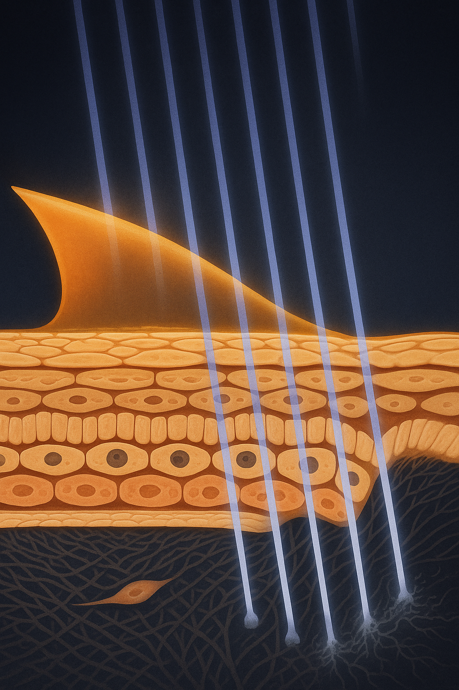

Review below. Reply approve to publish the Facebook post, or tell me edits.
SPF 50 on the label is not SPF 50 on your skin.
In short: the SPF number on a bottle is measured in a laboratory with sunscreen applied at 2 milligrams per square centimetre, a layer thicker than most people use. Because protection does not fall away in proportion to thickness, the practical fix is quantity and a second pass, not a higher number on the label.
SPF is not a property of the liquid. It is the outcome of a test, and the test has a fixed rule: the product is spread at 2 milligrams per square centimetre of skin before anything is measured. That film is what the number describes.
On an adult face, that is roughly a quarter of a teaspoon. Squeeze it onto a spoon once and it looks like far too much. Most people's instinct is a pea, or whatever disappears fastest under makeup.
Application studies keep finding the same gap: comparing how sunscreen is used in practice with how it is tested, researchers found real-world quantities landing well under the tested film (Petersen and Wulf, 2014).
Name the term once, then translate it. The sun protection factor describes a film, not a person. The bottle reports what a defined thickness of that formula did on a test panel, not what is sitting on your cheekbone at eight in the morning.
This is the part worth repeating to someone else.
It would be convenient if a thin layer behaved like watered-down cordial: half as much, half as strong, tidy and proportional. It does not. The relationship between the thickness of a sunscreen film and its measured protection is not a straight line, and thinning the layer costs protection faster than proportionally. Teramura and colleagues (2012) measured that relationship in a high-SPF product and concluded that a second application is the sensible answer.
The better analogy is paint. A thin coat does not fade evenly across a wall, it fails at the gaps, and those thin patches do damage out of all proportion to their size. A sunscreen film is the same kind of object: a layer whose whole job is to be continuous. Where it runs thinnest it stops being a filter and starts being a suggestion.
Which points somewhere unexpected. Getting closer to the number on the bottle is not about buying a bigger number. It is about putting more of the bottle on.
A quarter of a teaspoon for the face. Another quarter for the neck and ears. If a measuring spoon in the bathroom is never realistically going to happen, the two-finger rule gets you close: a line of product along the length of your index and middle fingers for the face, the same again for neck and ears.
Do it with a spoon once and look at it properly. That single look recalibrates your eye, and then you can go back to doing it by feel.
The commonly missed zones, missed with real consistency:
Which of these do you always miss?
One generous smear tends to get worked down into a thin one. It feels heavy, so it gets spread until it feels comfortable, and comfortable is thinner than the tested film.
Two lighter passes a few minutes apart build the layer instead. The first goes on and settles, the second lands on a surface that is no longer moving. More product, a more even film, for the same thirty seconds.
The reapplication rule is usually taught the wrong way round. Diffey (2001) made the case that an early reapplication, in the first half hour outdoors, matters mostly because it covers the misses and thin patches from the first go, not because the filters have expired on a timer. After that, reapply around the things that physically remove it: swimming, heavy sweating, towelling off.
Hughes and colleagues (2013) ran a randomised trial in Nambour, Queensland, comparing daily sunscreen use with discretionary use over four and a half years, assessing skin surface microtopography. The daily-use group showed no detectable increase in the measured ageing across that period. The discretionary group did.
Randhawa and colleagues (2016) followed daily use of a facial broad-spectrum product over a year and reported improvement in clinically evaluated photoageing measures.
Both are descriptions of what researchers measured, in those populations, over those timeframes, not promises about any bottle on a shelf. The honest summary is still striking: of the things you can buy, sun protection has the strongest randomised evidence behind the appearance of ageing, and it is the cheapest thing in the routine.
The inputs that compound are the ones repeated daily, and daytime protection is the one carrying the most evidence. Everything else, barrier care, sleep, actives, a ten-minute light therapy routine, sits on top of that rather than instead of it.
This is general skin education, not medical advice, and a pharmacist or GP is the right call if you take photosensitising medication.
Measure it once. Apply it twice. That is the whole change, and it costs nothing.
Roughly a quarter of a teaspoon for the face, and another quarter for neck and ears. If spoons are not happening, use the two-finger rule: a strip along the index and middle fingers for the face, the same again for neck and ears. Measure once so you know what it looks like, then trust your eye.
No. Those numbers describe the fraction of UV the tested film filtered, not a doubling of time in the sun, and the practical gap between them is smaller than it sounds. How much you apply matters more than the difference between the two labels, because a high number spread thinly is not delivering the film it was measured on.
If you are genuinely inside and away from windows, reapplication is not the thing to worry about. Reapply around the events that physically remove the layer: time outside, swimming, sweating and towelling. A desk beside a sunny window is the honest middle case, where a second pass costs nothing.
The randomised evidence is unusually good for a skincare question. Hughes and colleagues (2013) compared daily with discretionary use over four and a half years in Queensland, measuring skin surface microtopography, and found no detectable increase in the daily-use group where the discretionary group showed one. Randhawa and colleagues (2016) followed a year of daily broad-spectrum use and reported improvement on clinically evaluated photoageing measures.
Measure a quarter teaspoon of sunscreen into your palm. It looks like a mistake. It is the amount the number on the bottle was tested with.
The test rule is 2 milligrams per square centimetre of skin, which on a face works out at roughly that quarter teaspoon. Far more than most of us use. Which zone do you always miss?
The number describes a film, not a person, and most of us apply a fraction of it.
Here is the part that surprises people: the protection does not fall away in proportion to the layer. Thin the film and it drops faster than that. It is why researchers looking at high SPF products (Teramura and colleagues, 2012) landed on a simple answer: apply it twice.
The fix costs nothing. Measure a quarter teaspoon once so your eye learns the amount, then apply in two lighter passes a few minutes apart instead of one smear that gets rubbed down to nothing.
And that early second coat mostly earns its keep by covering the bits you missed, not because the filters have expired on a timer.
So which zone do you always miss? Ears, the side of the neck, the part in your hair. Tell me yours.
## Hashtags
#skinscience #sunprotection #spf #skinhealth #skincareeducation #australianskincare
FIRST COMMENT (keep this out of the caption): If you ever want a closer look, the mask and the full spec are here: https://redermis.com.au/products/red-light-therapy-face-neck-mask

Half the sunscreen is not half the protection.
It falls away faster than that.
The number on the bottle is a laboratory measurement, taken at a set film thickness. So the SPF belongs to the film, not to your face.
The tested film is 2 milligrams per square centimetre. On a face, about a quarter of a teaspoon.
Two passes, a few minutes apart, build a film. One thick smear just gets rubbed down to a thin one. And that early second coat mostly earns its keep by covering the patches you missed on the first pass, the ears, the side of the neck, the part in your hair, rather than because a timer has run out on the filters.
Worth knowing: in a randomised trial in Queensland running four and a half years, the daily sunscreen group showed no detectable increase in the measured skin ageing over the period. Appearance, measured, over years.
A quarter teaspoon. Two passes.
A routine change that costs nothing.
Save this so you have the amount next time. And which zone do you always skip?
If you ever want a closer look at the mask, the link is in the bio.
## Hashtags
#skinlongevity #skinscience #sunprotection #spf #australianskin #skincaretips #photoageing
## Title
How much sunscreen for your face: the quarter teaspoon most of us skip (and the two finger rule)
## Description
SPF is a laboratory number, measured at 2 milligrams per square centimetre of skin. Most of us apply a fraction of that, and protection falls away faster than the layer thins. The fix is dose, not a bigger number: two finger lengths for face and neck, in two passes a few minutes apart. In a four and a half year Australian randomised trial, the daily sunscreen group showed no detectable increase in measured skin ageing.
## CTA
If you want a closer look, it is here: https://redermis.com.au/products/red-light-therapy-face-neck-mask
## Hashtags
#SunscreenTips #SkincareScience #SkinAgeing #SPFTips #SunscreenApplication
Note: this pin reuses the Instagram image (instagram.png, 1024x1536, already Pinterest's native 2:3 pin ratio), with no text overlay. There is no Pinterest image prompt by design.